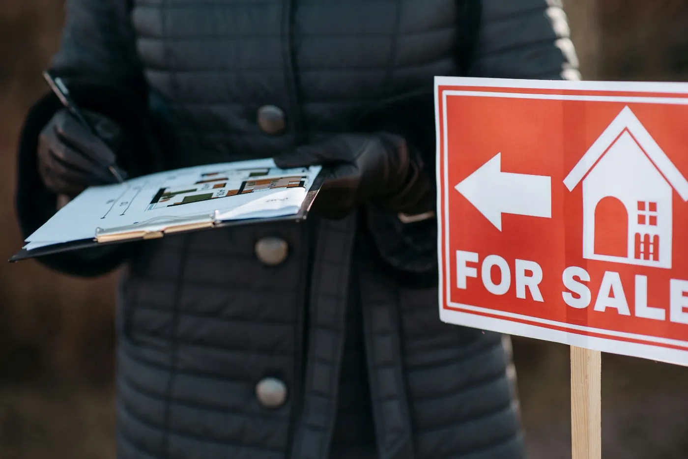

Artikel
Panduan sewa & jual-beli properti
Hal yang perlu diperiksa sebelum menyewa tempat usaha, menandatangani kontrak, atau membeli properti di Bali dan NTB.

Cara Memilih Tempat Usaha Terbaik di Bali Agar Bisnis Tidak Sepi
Bali menjadi salah satu daerah dengan pertumbuhan bisnis yang cukup cepat dalam beberapa tahun terakhir. Tidak hanya sektor pariwisata, berbagai usaha…

Bisnis yang Diprediksi Ramai di 2026
Tahun 2026 diperkirakan menjadi periode yang menarik bagi dunia usaha di Indonesia. Setelah beberapa tahun terakhir bisnis mengalami perubahan besar…

Kenapa Banyak Orang Rugi Kontrak Properti ?
Kontrak properti sering dianggap hanya sebagai proses administratif biasa sebelum seseorang menempati rumah, toko, ruko, atau bangunan tertentu. Banyak…

Isi Perjanjian Sewa Properti Yang Harus Ada
Dalam praktik sewa menyewa rumah, banyak orang hanya fokus pada harga sewa, lokasi, dan jangka waktu kontrak. Padahal, ada banyak isi penting dalam…
Seni Negosiasi Harga Sewa Properti Agar Tidak Rugi
Tips Nego Harga Sewa Properti Agar Tidak Rugi Negosiasi harga sewa properti sering dianggap sekadar proses tawar-menawar biasa. Padahal dalam praktiknya,…

Risiko Menyewa Properti Tanpa Perjanjian Tertulis
Dalam praktik sehari-hari, masih banyak transaksi sewa rumah, toko, maupun ruko yang dilakukan tanpa perjanjian tertulis. Sebagian orang merasa cukup aman…